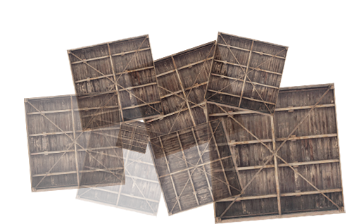

Toggle navigation
LearnOpenGL CN
主页
目录
简介
入门(Getting started)
OpenGL
创建窗口
你好，窗口
你好，三角形
着色器
纹理
变换
坐标系统
摄像机
复习
光照(Lighting)
颜色
光照基础
材质
光照贴图
投光物
多光源
复习
加载模型(Model Loading)
Assimp
网格
模型
高级OpenGL(Advanced OpenGL)
深度测试
模板测试
混合
面剔除
帧缓冲
立方体贴图
高级数据
高级GLSL
几何着色器
实例化
抗锯齿
高级光照(Advanced Lighting)
高级光照
Gamma校正
阴影
阴影映射
点阴影
CSM
法线贴图
视差贴图
HDR
泛光
延迟着色法
SSAO
实战(In Practice)
文字渲染
2D游戏
Breakout
搜索
上一节
下一节
CSM
CSM
未完成
这篇教程暂时还没有完成，您可以经常来刷新看看是否有更新的进展。

请启用JavaScript以浏览
Disqus评论。
×
关闭
搜索
请在下面输入你要搜索的文本（仅支持英文）：